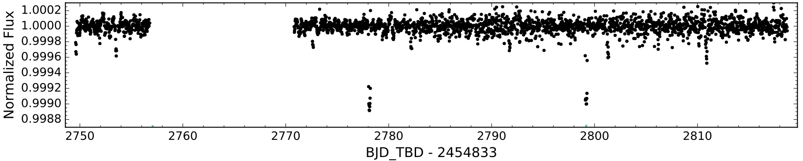

Analyzing Published Data
Analyzing Published Data#
Recall from yesterday that we determined there are two main ways to detect an exoplanet: using radial velocities (i.e. the “wobble” method), or using the transit method.

Fig. 6 Image credit: NASA#
✅ Finding big exoplanets in close orbits
✅ Measuring exoplanet mass
✅ Ground-based telescopes
🚫 Finding exoplanets in distant orbits
🚫 Measuring exoplanet diameters
🚫 Finding small exoplanets

Fig. 7 Image credit: NASA#
✅ Finding exoplanets in close orbits
✅ Measuring exoplanet diameters
✅ Space-based telescopes
🚫 Finding exoplanets that don’t cross stars
🚫 Measuring exoplanet mass
🚫 Determining if actually a planet or small star
The most popular method is the transit method. Using this technique, astronomers can get information about the size of the planet and the radius of its orbit, as well as an estimate of the inclination. Let’s explore some real data taken using this method.
The figure below was taken from a recent publication by Crossfield et al. (2017) in the Astronomical Journal. Can you find the planet? Do you see anything else? If so, what do you think it implies?

Resolving the Mystery
Surprise! It turns out that there are two planets hiding in this light curve! The vertical ticks show the location of each planet’s transit. Multiple planet systems are surprisingly common in Kepler data. These systems tend to be compact and close to their host star, with planets less massive than Jupiter, leading to placid, stable orbits, rendering them easier for Kepler to detect.
From the data above, determine the radius and orbital distance of each planet. Show your work. For more information on this system, including the mass and radius of the host star, (and to check your results against those from the paper), here is a link to the publication: https://arxiv.org/pdf/1701.03811.pdf